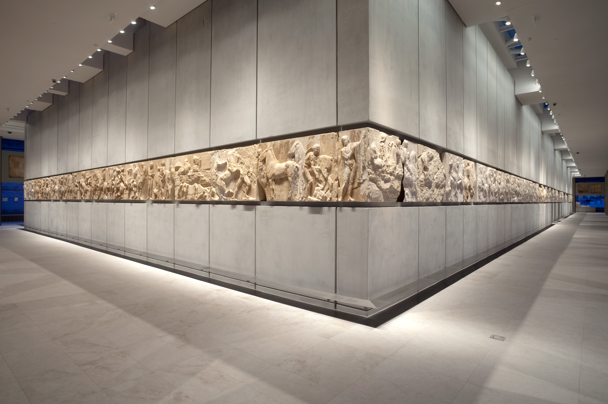
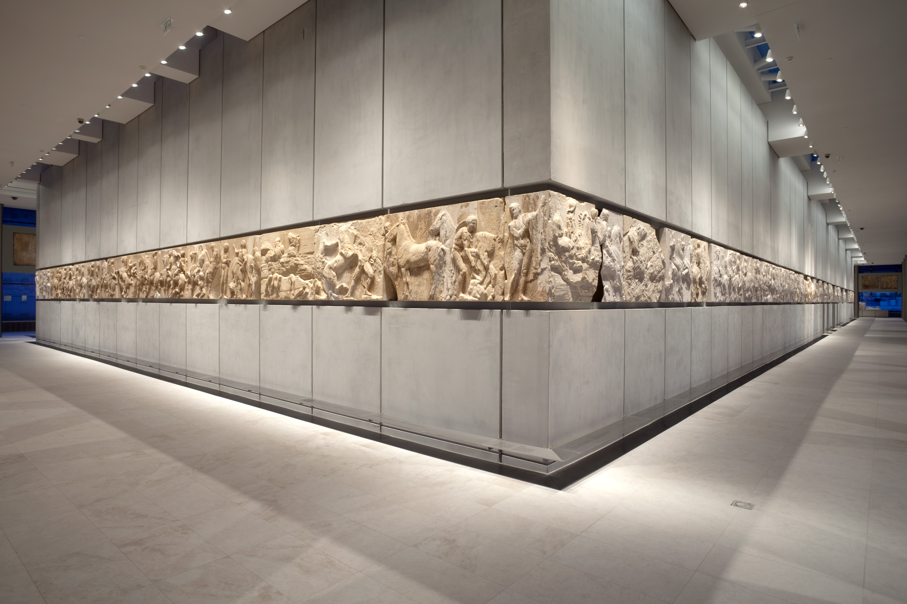

Acropolis
Scroll Down

The Acropolis Museum
The Acropolis Museum, located in Athens, Greece, is a contemporary museum focused on the findings of
the archaeological site of the Acropolis of Athens. Opened to the public on June 20, 2009, the
museum was built to house every artifact found on the rock and on the surrounding slopes, from the
Greek Bronze Age to Roman and Byzantine Greece. It also lies over the ruins of a part of Roman and
early Byzantine Athens, integrating the archaeological site into its foundation and offering a
direct view of the excavations through glass floors.
Designed by Swiss architect Bernard Tschumi with Michael Photiadis, the museum seeks to enhance the
visitor's understanding of the sculptures that adorned the temples of the Acropolis. One of its most
notable features is the glass-encased top floor, aligned with the actual Parthenon, offering a
comprehensive view of the Parthenon Marbles, a portion of which is also known as the Elgin Marbles,
currently housed in the British Museum in London. The museum's design and its approach to
conservation and display have been the subject of extensive study and praise in the fields of
archaeology and museology.
The Acropolis Museum has quickly become one of Athens' most visited tourist sites, offering a close
connection between the displayed artifacts and the Acropolis itself. Its creation was also part of a
larger cultural and political campaign by Greece for the return of the Parthenon Marbles from the
British Museum, arguing that the marbles should be displayed in their original historical and
cultural context.
Collections
 


Athens
the Oldest Capital of Europe
Athens, the capital city of Greece, is one of the world's oldest cities, with its recorded history
spanning over 3,400 years. A center for the arts, learning, and philosophy, it is widely referred to as
the cradle of Western civilization and the birthplace of democracy, largely due to its cultural and
political impact during the 5th century BC. At its heart was the Acropolis, the ancient high city that
was home to many of the architectural and historical marvels that define ancient Greek civilization,
including the Parthenon, the Erechtheion, and the Temple of Athena Nike.
Throughout history, Athens has undergone a series of diverse eras, from its early beginnings as a
powerful city-state that was a leader in the development of democracy, philosophy (with notable
philosophers including Socrates, Plato, and Aristotle), literature, and theatre, to its role in the
Roman, Byzantine, and Ottoman Empires. The city also played a pivotal role during the Greek War of
Independence in the early 19th century and was chosen as the capital of the newly established Kingdom of
Greece in 1834.
Modern Athens is a bustling metropolis and the economic, financial, industrial, political, and cultural
lifeblood of Greece. It is characterized by a mix of historical and modern elements, with ancient ruins
and monuments juxtaposed against a vibrant cityscape. Athens' urban area spreads across the central
plain of Attica that is surrounded by mountains on three sides and opens to the sea on the fourth. The
city experiences a Mediterranean climate, which entails hot, dry summers and mild, wet winters,
contributing to its appeal as a tourist destination.
The city's rich historical and cultural heritage is evident in its numerous museums and archaeological
sites, with the Acropolis Museum and the National Archaeological Museum being among the most visited.
Athens is also the political center of Greece, housing all the major government buildings. The city
hosted the first modern-day Olympic Games in 1896 and again in 2004, reinforcing its status as a global
city with a significant impact on sports, culture, and education.